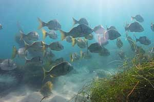
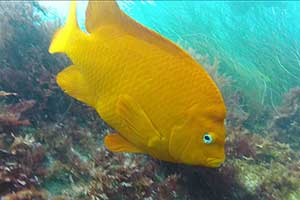

All about San Diego based sea life
Get to know some of our local fish
 Just offshore beyond the beautiful San Diego beaches, a variety of small fish will greet you. Some stay close to the ocean bottom and skitter for hiding places when they first see your mask. Others dart frantically back and forth searching for protection. Many are fingerlings, the young of larger fish not yet ready to join their elders in the open waters. Others are bottom dwellers who are heavier than water and must exist on the ocean floor. These fish, such as blennies and gobies, are not brilliantly colored as they depend on camouflage for security.
Farther out in water 30 feet deep, you'll see some of the best kelp forests in the world. The kelp leaves branch symmetrically right and left from a slender stalk, each with its own gas-filled bladder, which looks like a bulb and supports its weight as well as that of the main stalk. This is the giant kelp which attains a height in our San Diego and Southern California waters of over 100 feet and grows as much as two feet a day. This means some kelp is as tall as six-story office buildings!
 Sunlight plays among the golden amber fronds, painting beautiful pictures with its shafts of light through the blue-green of the deeper water. Huge golden-colored snails live on the kelp fronds, each snail with a brilliant red foot. You'll also see larger fish such as calico bass, sheepshead and perch. Most obvious of all are the brilliant orange garibaldi, whose inquisitive nature makes them approach San Diego snorkelers in a role reversal of fish watching people! These fish are protected by law throughout San Diego California.